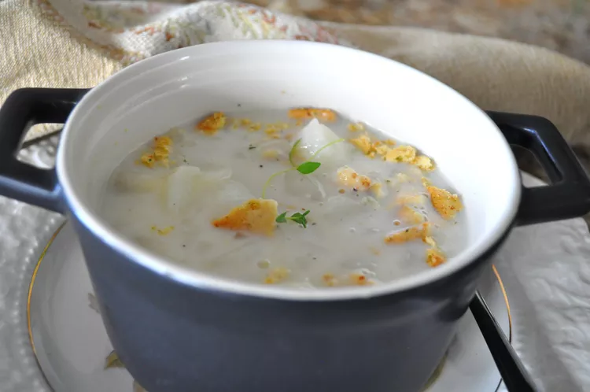

The Odin Project
Recipes
Snow Days Potato Soup
 This best tasting potato soup is perfect for when the weather is bad or good. Simple to prepare, but tastes like you've slaved away. Excellent by itself or with crackers and other favorite additions. So when you're snowed in, make up a batch and call the family around to enjoy! Thanks Mary Ella!Snow Days Potato Soup
This best tasting potato soup is perfect for when the weather is bad or good. Simple to prepare, but tastes like you've slaved away. Excellent by itself or with crackers and other favorite additions. So when you're snowed in, make up a batch and call the family around to enjoy! Thanks Mary Ella!Snow Days Potato Soup
This best tasting potato soup is perfect for when the weather is bad or good. Simple to prepare, but tastes like you've slaved away. Excellent by itself or with crackers and other favorite additions. So when you're snowed in, make up a batch and call the family around to enjoy! Thanks Mary Ella!Snow Days Potato Soup
This best tasting potato soup is perfect for when the weather is bad or good. Simple to prepare, but tastes like you've slaved away. Excellent by itself or with crackers and other favorite additions. So when you're snowed in, make up a batch and call the family around to enjoy! Thanks Mary Ella!